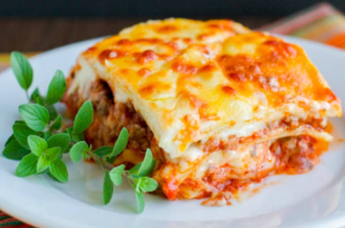

Lasagna

Descripcion
La Lasagna es un plato ancestral, con una historia impresionante. Los romanos acostumbraban a comerla todo el tiempo en banquetes, debido a su delicioso sabor. No dejes de probar este rico plato y aprende como prepararla con nosotros. ¡A cocinar!
Los ingredientes de Lasagna son fáciles de conseguir, y su preparación no es para nada compleja. Tiene muchas variantes, con verduras, tomates y quesos. En esta receta la cocinaremos con salsa boloñesa al horno, donde el tomate, queso y salsa se mezclan con capas para crear un sabor exquisito.
Ingredientes
- 500 gramos de pasta para lasagna
- Salsa bolognesa
- 300 gramos de queso mozzarella
- 4 cucharadas de mantequilla
- 2 cucharadas de harina
- 2 tazas de leche evaporada
- Sal, pimienta y nuez moscada
- Queso parmesano al gusto
Pasos
- Cocina por 4 minutos, una a una, las láminas de pasta en agua con sal y dos cucharadas de aceite.
- Sumerge las láminas en un tazón con agua fría y luego sécalas una por una.
- Para hacer la salsa bechamel, derrite la mantequilla y añade la harina. Luego echa la leche caliente de a pocos, agrega sal, pimienta, nuez moscada y queso parmesano al gusto. Deja espesar.
- Enmantequilla un molde y acomoda una capa de masa, salsa blanca, y mozzarella en trozos.
- Alterna con otra capa de masa y salsa de carne. Así sucesivamente hasta terminar con queso mozzarella y rociar con queso parmesano.
- Tapa con papel plata y lleva al horno a 350° F (180°C) por 20 minutos. Luego saca el papel plata y deja gratinar por 5 minutos aproximadamente.